Quem é Naruto?
Um jovem ninja de Konoha, a Vila Oculta da Folha. Ele quer se tornar Hokage e conquistar o respeito das pessoas ao seu redor.
UM PRIMEIRO PASSO NO MUNDO NINJA
Naruto é a história de um jovem ninja da Vila Oculta da Folha que sonha em se tornar Hokage, o líder de sua aldeia. Explore personagens, vilas e clãs com explicações para quem está chegando agora.
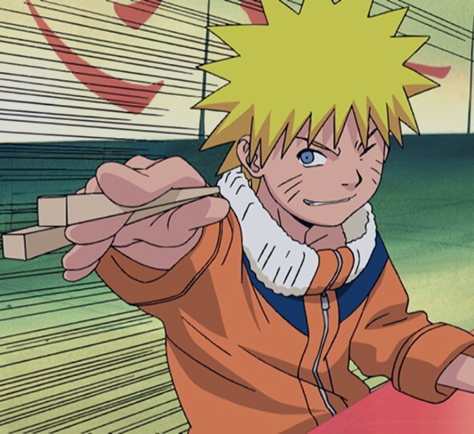
Para começar
Quatro ideias ajudam a entender o mundo de Naruto sem precisar conhecer a série.
Um jovem ninja de Konoha, a Vila Oculta da Folha. Ele quer se tornar Hokage e conquistar o respeito das pessoas ao seu redor.
É o lar e centro de treinamento dos ninjas de uma região. Cada vila tem seus próprios líderes, tradições e habilidades.
É o título dado ao líder de Konoha, responsável por proteger a vila e orientar seus ninjas.
Um ideal de Konoha que valoriza o cuidado entre as pessoas e a transmissão de esperança e ensinamentos às próximas gerações.
Conheça o elenco
Clique em um personagem para ver mais informações, sem spoilers importantes.
 Naruto UzumakiUm ninja persistente que sonha em se tornar Hokage.Saiba mais
Naruto UzumakiUm ninja persistente que sonha em se tornar Hokage.Saiba maisNaruto é um ninja enérgico da Vila Oculta da Folha. Seu grande objetivo é se tornar Hokage e conquistar o reconhecimento de seus companheiros.
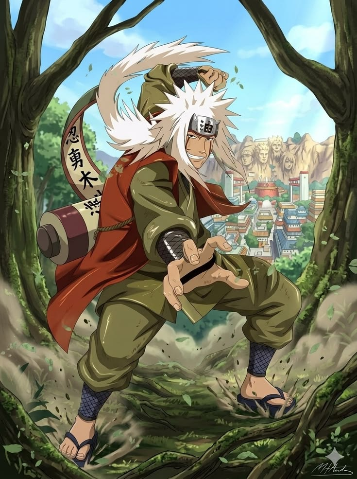
JiraiyaUm ninja experiente, escritor e mentor.Saiba maisJiraiya é um dos ninjas mais experientes de Konoha. Além de suas aventuras, também é conhecido por escrever histórias.
 Itachi UchihaUm shinobi reservado e conhecido por sua habilidade.Saiba mais
Itachi UchihaUm shinobi reservado e conhecido por sua habilidade.Saiba maisItachi pertence ao clã Uchiha e é reconhecido por sua inteligência e talento como ninja.
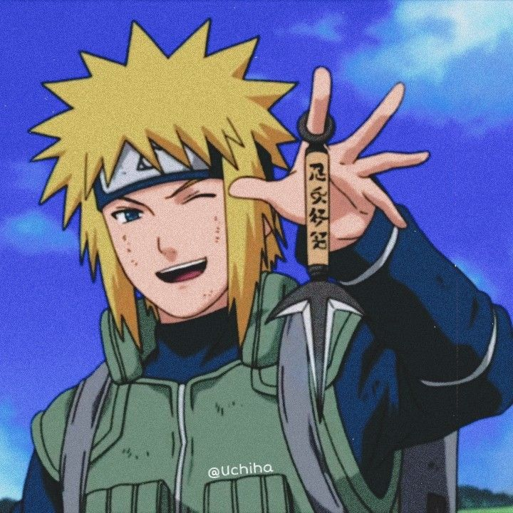
Minato NamikazeUm ninja de Konoha lembrado por sua velocidade.Saiba maisMinato é conhecido por sua inteligência e velocidade. Ele chegou a ocupar o cargo de Hokage, líder da Vila Oculta da Folha.
 Kakashi HatakeO experiente instrutor do Time 7.Saiba mais
Kakashi HatakeO experiente instrutor do Time 7.Saiba maisKakashi é um ninja experiente de Konoha e líder do Time 7, conhecido por orientar seus alunos com calma e estratégia.
 Maito GuyUm mestre de taijutsu famoso por sua energia e determinação.Saiba mais
Maito GuyUm mestre de taijutsu famoso por sua energia e determinação.Saiba maisMaito Guy é um jōnin de Konoha que acredita no esforço e no treinamento. Ele é o mentor de Rock Lee e um dos ninjas mais animados da vila.
 Obito UchihaUm shinobi do clã Uchiha que valoriza seus companheiros.Saiba mais
Obito UchihaUm shinobi do clã Uchiha que valoriza seus companheiros.Saiba maisObito é um ninja do clã Uchiha. Sua história explora os laços entre companheiros e o impacto das escolhas de cada shinobi.
 Rock LeeUm ninja dedicado que se especializa em combate corpo a corpo.Saiba mais
Rock LeeUm ninja dedicado que se especializa em combate corpo a corpo.Saiba maisRock Lee é aluno de Maito Guy. Com muito treino e perseverança, busca se tornar um grande ninja usando suas habilidades de taijutsu.
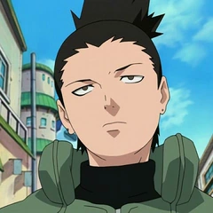
Shikamaru NaraUm estrategista brilhante que prefere resolver desafios com calma.Saiba maisShikamaru é calmo, observador e dono de um raciocínio estratégico. As técnicas de sombras do clã Nara combinam com sua habilidade de planejar.
 Sasuke UchihaUm talento dedicado ao treinamento e integrante do Time 7.Saiba mais
Sasuke UchihaUm talento dedicado ao treinamento e integrante do Time 7.Saiba maisSasuke é um ninja reservado e talentoso, conhecido por sua disciplina e dedicação ao treinamento. Ele faz parte do Time 7 junto de Naruto e Sakura.
A jornada
Uma visão geral de etapas da jornada de Naruto.
Fase 01
Na infância em Konoha, Naruto busca reconhecimento e sonha em se tornar Hokage.
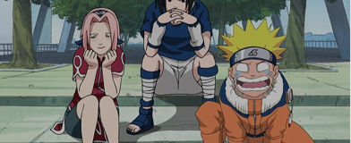
Fase 02
Ao lado de Sasuke, Sakura e Kakashi, Naruto aprende que a força real vem dos laços entre companheiros e do trabalho em equipe.
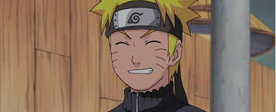
Fase 03
Após anos de treinamento intenso, Naruto retorna mais forte, determinado a proteger seus amigos e continuar evoluindo como shinobi.
O mundo shinobi
Cinco nações, cinco aldeias, cinco forças que moldam o equilíbrio do mundo.
A aldeia de Naruto e dos Hokages, ligada à Vontade do Fogo e à cooperação entre seus clãs.
País do Vento

Aldeia do deserto, no País do Vento, com tradição em técnicas de vento e marionetes.
País da Água

Aldeia do País da Água, conhecida pela névoa e por sua tradição de espadachins.
País do Relâmpago

A Aldeia Oculta das Nuvens, no País do Relâmpago. Berço de shinobi de natureza raio e de poderosos Raikages.
País da Terra

A Aldeia Oculta das Pedras, no País da Terra. Conhecida por sua resistência e pelos shinobi de natureza terra.
Linhagens lendárias
Cada clã carrega uma herança de técnicas, habilidades e histórias que definem o mundo ninja.
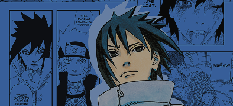
Sharingan
Linhagem de elite de Konoha, detentora do poderoso Sharingan.
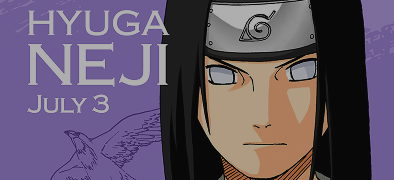
Byakugan
Byakugan e combate preciso com controle de chakra.
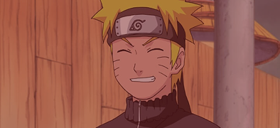
Vitalidade e Selamento
Vitalidade extraordinária e tradição ancestral em técnicas de selamento.
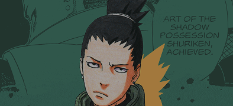
Sombras e Estratégia
Manipulação de sombras e estratégia em equipe.

Expansão Corporal
Convertem calorias em chakra para expandir o corpo e amplificar força.
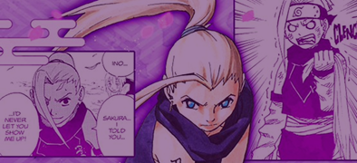
Técnicas Mentais
Especialistas em invasão mental e comunicação telepática em combate.